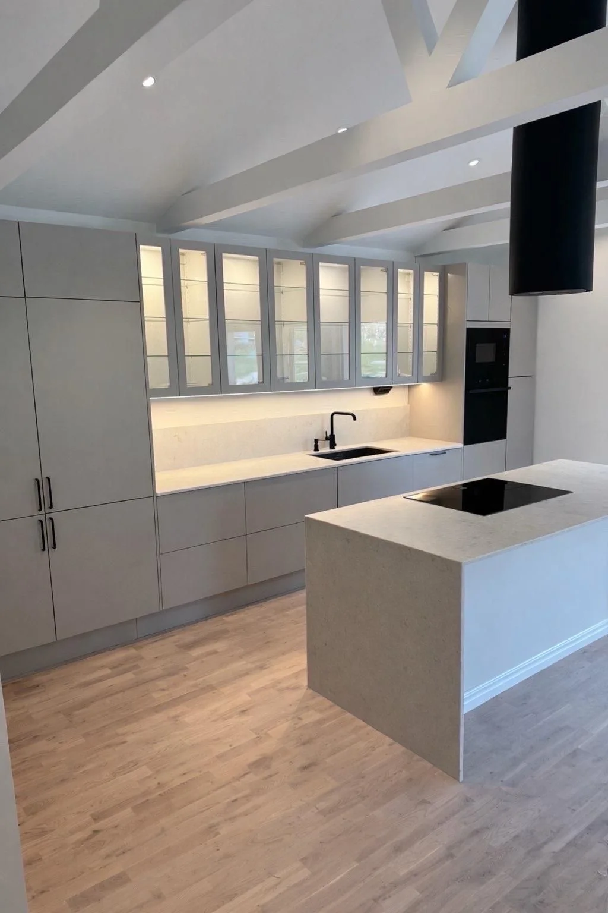
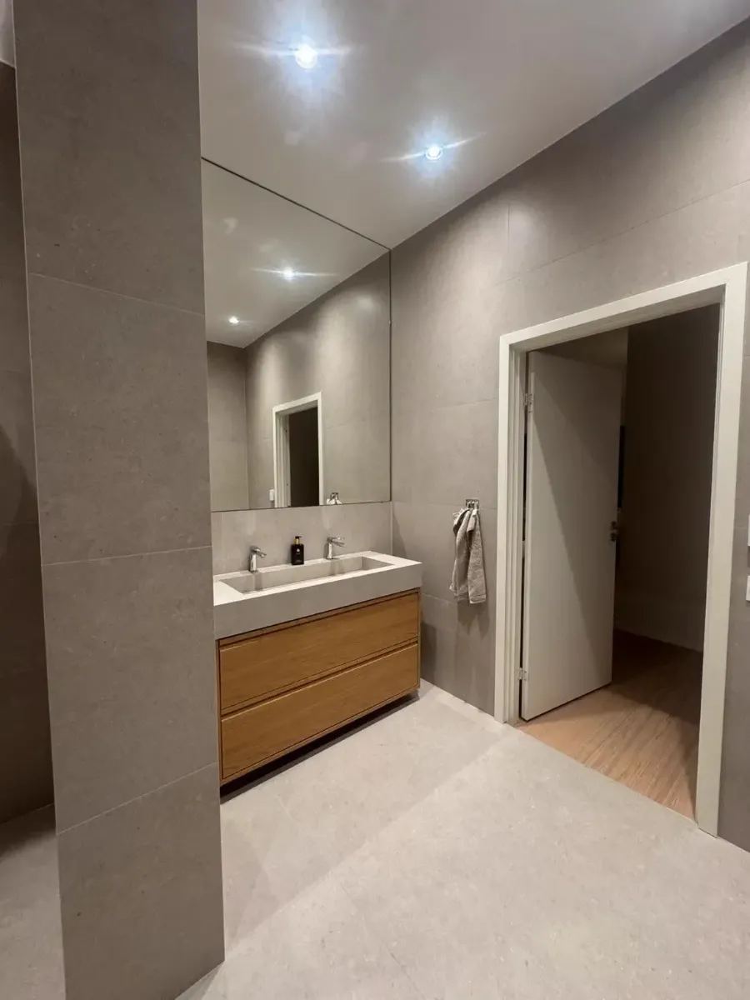
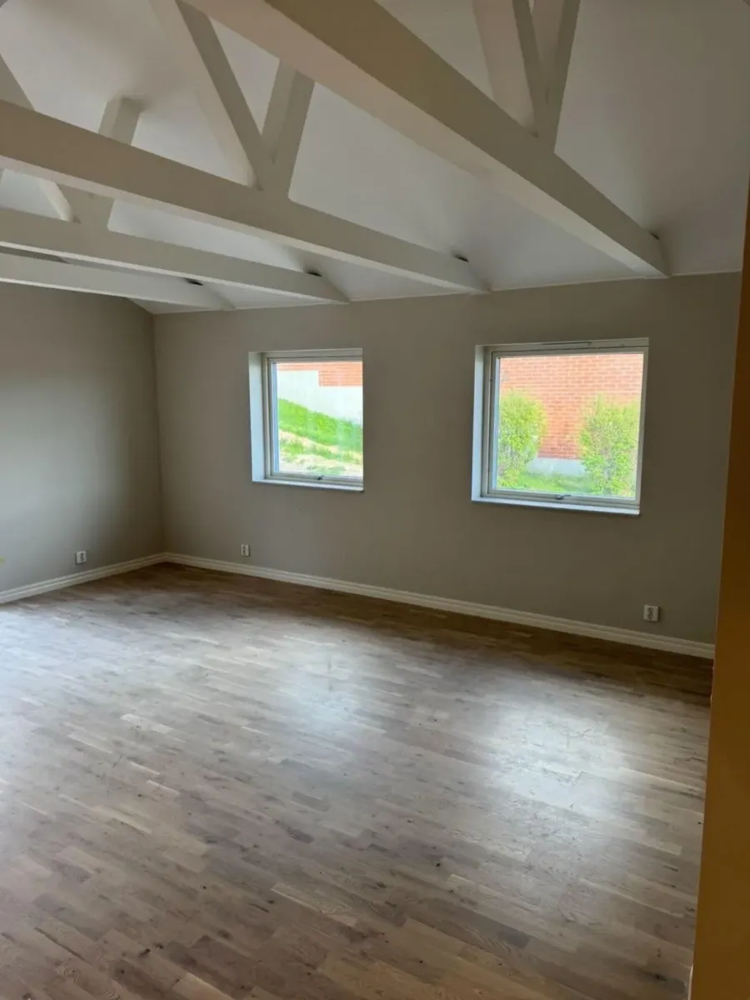

Vi lyssnar
Du berättar om dina idéer. Vi tittar på förutsättningarna och vad som är viktigt för dig.


Viktor & Nico · Norrköping & Östergötland
Från första tanke till sista detalj.
Vi bygger om, bygger till och tar hand om helheten.
Det är detaljerna som gör det
Ett kök att samlas i. Ett badrum att landa i. Ett hus som får växa med livet. Vi gör plats för det du längtar efter.


Dra reglaget för att se förändringen. Samma rum, före och efter.
Grå skåp, glasdörrar och en köksö som samlar rummet. De synliga takbalkarna ger det renoverade köket en egen karaktär.
Utforska projektetMaterial, förvaring och snickeri som hänger ihop.
Det här kan vi hjälpa dig med
Vi hjälper privatpersoner, företag och fastighetsägare. Från en avgränsad insats till ett större byggprojekt.
Utvalda arbeten
Möt personerna bakom VN Bygg i vår egen introduktionsfilm.
Människorna bakom hantverket
Viktor och Nico. Två personer med ett gemensamt engagemang för bygg, snickeri och ett resultat att vara stolta över.
Hos oss har du nära till dem som driver arbetet. Vi tror på raka besked, tydliga överenskommelser och omsorg om ditt hem.
Lär känna ossOrd från våra kunder
Duktiga, trevliga, noggranna. Anlitar dom gärna igen.
Bra jobbat. Punktligt. Höll budgeten.
Duktiga Snickare som har öga för detaljer.
Tryggt från start till klart
Du berättar om dina idéer. Vi tittar på förutsättningarna och vad som är viktigt för dig.
Du får en tydlig offert med omfattning och överenskomna steg innan vi sätter igång.
Vi håller kontakten under arbetet och stämmer av detaljer längs vägen.
Vi avslutar med en gemensam genomgång av det vi kommit överens om.
Vi utgår från Norrköping och arbetar i Linköping och övriga Östergötland. Hör av dig så ser vi om vi kan hjälpa till på din ort.
Ja, vi erbjuder totalentreprenad och samordning. Vilka arbeten och yrkesgrupper som ingår bestämmer vi tillsammans i offerten.
Vi erbjuder ett kostnadsfritt hembesök för att prata om ditt projekt och titta på förutsättningarna.
Det beror på arbetet och dina förutsättningar. Ange att du vill använda ROT i din förfrågan och kontrollera de aktuella reglerna hos Skatteverket.
Ring Viktor eller Nico, eller förbered en förfrågan via vårt formulär. Berätta gärna vad du vill göra, var projektet finns och när du vill komma igång.
Ska vi skapa något tillsammans?
Stort eller litet, färdig plan eller första tanke.
Börja med ett samtal med Viktor eller Nico.